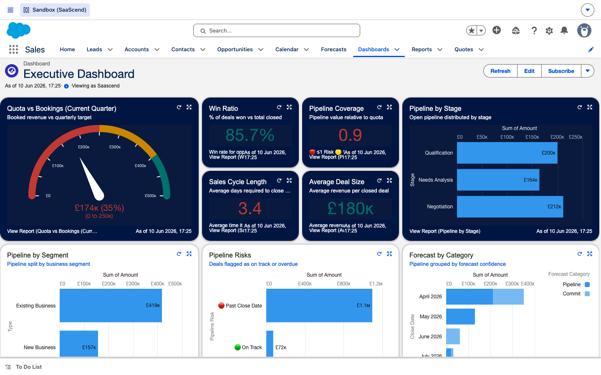

Salesforce in 5 minutes
Start here — get your bearings
Before the journey, three things every first-time user needs: how to read a record, how to get around, and what the acronyms mean. Then create your first opportunity and try the live simulator.
① Anatomy of a record page
Click each numbered marker to learn what it is.

Tip: tap a blue number on the screenshot to learn that part of the page.
Open this record in Salesforce ↗
② Getting around
Three things you'll use constantly.


🔎 The global search bar (top of every page) finds any record by name. The nav bar beneath it switches objects. The app launcher (▦, top-left) jumps between apps.
③ Decode the jargon
Hover any dotted term anywhere in this guide for a definition, or browse them all:
Your first task
Create your first opportunity
The guided “New Opportunity” button does the heavy lifting. Step through it:

Watch the automation work
Same record, before and after you hit Save. The system fills the grey fields for you.
Try it yourself
Live scoring simulator
The system scores every lead and deal automatically. Play with the inputs and watch the score move — no data is changed in Salesforce.
BANT qualification
0
Unqualified
MEDDPICC health
0
🔴 Red